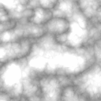

9. Noise generator
This toolkit provides several functions to generate Perlin noise and other derived noises. It can handle noise functions from 1 to 4 dimensions.
Usage example:
1D noise : the variation of a torch intensity
2D fbm : heightfield generation or clouds
3D fbm : animated smoke
If you don't know what is Perlin noise and derived functions, or what is the influence of the different fractal parameters, check the Perlin noise sample included with the library.
| Simplex noise, fbm, turbulence |  |
 |
 |
| Perlin noise, fbm, turbulence |  |
 |
 |
| Wavelet noise, fbm, turbulence |  |
 |
 |
Noise functions relative times
For example, in 4D, Perlin noise is 17 times slower than simplex noise.
| 1D | 2D | 3D | 4D | |
| simplex | 1 | 1 | 1 | 1 |
| Perlin | 1.3 | 4 | 5 | 17 |
| wavelet | 53 | 32 | 14 | X |